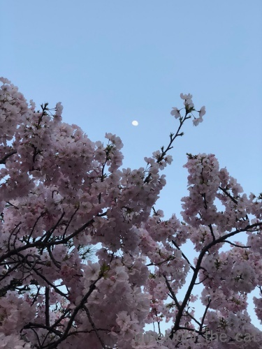
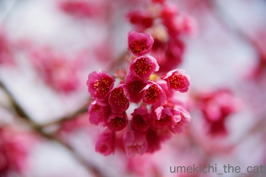

添い寝は週末のお楽しみ♪ [梅吉]
お休みの日の朝ごはんを食べたらおかーさんを置き去りにして
さっさと寝室に消えてゆく梅吉さん。

寝室ではこんなことしているようです。おっとに添い寝。
ちらキバー！
お口開けて寝てて乾いて閉まらなくなったんじゃないですか？(*>艸<)


最後までちらキバでしたw
本気でリラックスしている時はどうしてこんなにぶちゃいくなんだろう・・・

でも起きてくると低く構えてー

はじまるプロレスw
お顔もキリッとしちゃってますよ。
お休みの日は梅吉とおとーさん、なんかイチャイチャしてますwww
平日は添い寝しに行かないので平日・休日の区別は
人間の行動パターンか何かでなんとなく分かるみたいです。
だったら早朝にご飯をねだっておかーさんを起こすのも
もう少し遅くしていただけないものだろうか・・・
と思うのであります(｀_´)ゞ
日曜日、近所の公園へお花見に行って来ました。
６分咲きくらいでしたがたくさんの人。
お寿司と唐揚げ＾＾もちろんビールは外せません。
近所にできた鳥からあげ専門店、一個がすごく大きい！
肝心の桜。水際は気温が低いのかこれから開きそう。

お日様のよく当たるところは満開です。月が見えてます＾＾
桜と紅葉は神社仏閣がよく似合う。
河津桜。

寒緋桜。
山茱萸。
ミツマタ。
今日明日の気温の上昇で桜はあっとう間に散ってしまうのでしょうか。
今週末まで頑張って欲しい！！
2018-03-28 14:35
nice!(53)
コメント(18)

カフェオレ色の梅吉

梅吉 2023年8月10日 永眠


梅吉と出会った譲渡会

犬猫の理由なき殺処分ゼロ
妄想広告
UMEKICHI 光

爆発的に早い！
時々攻撃的！
Thanks to Mr.Boss365
爆発的に早い！
時々攻撃的！
Thanks to Mr.Boss365

え？
チラキバかわいいですよ。
ブサイクじゃないもん（笑）
by ふにゃいの (2018-03-28 14:45)
最初の写真なんだか梅吉さんヌイグルミみたい。毛のモコモコ感が手触り良さそうです。いろんなお花が咲いていてお花見羨ましいです。美しいお写真で楽しませて頂いてます。
月・河津桜・寒緋桜の3枚を追加で持って行かせて下さい。おかげさまで満月広場が桜でいっぱいになって来ました。ありがとうございます。
by zombiekong (2018-03-28 15:23)
朝ごはんを食べたら、さっさと寝室へ！
まさに楽園じゃないですか(#^.^#)
ちらキバ♪可愛いですねぇ～
お花見！！！
本日１週間ぶりにお外に出てみたら
春がそこら中に♪
桜も満開でした！！
気持ち良くお散歩出来ました♪
ってお花もいいですが
お寿司にからあげ♪美味しそうです(#^.^#)
by きぃ (2018-03-28 16:06)
ちらキバの梅吉さん、可愛いですよぉ(^O^)
休日は夫さんに添い寝してくれて
一日中構ってくれるなんて優しいですねぇ(^-^)
うちは休日もかみさん一筋です(T_T)
桜、今度の土曜日に見に行く予定ですが頑張って欲しいなぁ(^_^)v
by ニッキー (2018-03-28 16:12)
ちらキバかわいい～ブサイクじゃないですよ(*^^*)
みんないる日といなくなる日の区別はうちもあるような気がします。でもご飯の時間は平日休日関係なく起こしに来ます(-"-)
by palpal (2018-03-28 17:01)
ちらキバかわいい～♪
お休みの日は一緒に二度寝、おとーさんがゆっくりしているから、嬉しいんですね＾＾
微笑ましいなあ‥
でも朝ごはんは早いんですね？＾＾；
美しい桜さんたち！ 神社仏閣に似合いますねえ。河津桜や寒緋桜も綺麗なこと。
他のお花も負けじと咲いていますね＾＾
by sana (2018-03-28 18:22)
梅吉さんキバがチョロッと出ちゃったのですね！
しっかり撮影されちゃってますね(^^)
by ma2ma2 (2018-03-28 18:33)
ちらキバ、可愛いですね。リラックスしている証拠ですね。
添い寝してくれるなんていいな～。
ウチの猫の場合、添い寝することなんてほとんどありません。
（私のイビキがうるさいらしい。^^;）
お花の写真、どれも素敵ですね。
by yes_hama (2018-03-28 21:52)
休日はお父様と過ごすんですね、梅吉さん。
私と同じです。
ベッドに連れてって、一緒に寝ます(^^;
休日の楽しみです(^^)
by riverwalk (2018-03-28 21:52)
梅吉さんの静かな寝息が聞こえてきそうです。
お休みの日が分かるなんて凄いです。
お休みの日も朝は朝ですよね〜梅吉さん。
土曜日に花見のランチの予定です。
土曜日まで待っていてくれるのでしょうか（笑）
by kiki (2018-03-28 21:57)
チラ牙梅吉さん、あごのあたりがふかふか♪
わしわし撫でまわしたいです(*^▽^*)
おとーさんに添い寝、羨ましいです。
ウチは布団＝遊び場にしてしまったのを激しく後悔です・・・。
休日も基本同じ時間に起きますが、出かけなければ！というプレッシャーがないのがこてつにもバレバレです。
私も先週土曜に花見に行きましたが5分咲きぐらいでした。
今週末までもってくれることを祈ります。
by ゆきち (2018-03-28 22:03)
梅吉くんって、全身茶系なのですね！（と改めて思った）
たっぷり寝て、ランランのお目目で遊んでもらってますね〜*^^*
うちの面々も、平日(ON)と休日(OFF)が分かっているようです。
平日朝はみんな、結構クールです・・・
朝着替えていると警戒される（病院に連れて行かれる・・かも）のですが
部屋着でいるとみんなもノンビーリしています。分かるのか！
お花もどれも綺麗ですね。
ミツマタは、いつも梅と同時に見ているイメージがあります。
by Ja-Kou66 (2018-03-29 00:25)
うちの子もしょっちゅう出てますよ。
添い寝してくれる子は夏でも一緒に寝てくれますね＾＾
by ぽちの輔 (2018-03-29 06:55)
平日と休日がわかってるなんて、流石ですー！
お花見いい感じですね。
私は土曜日にえびラン仲間と広尾でお花見です（≧∇≦）
by よーちゃん (2018-03-29 09:06)
子供の頃、添い寝が日課でした。お布団の中で、出産したこともありました。
にゃんこ好きより、ガブッと！^ ^
by KENT0mg (2018-03-29 12:37)
こちらは既に花吹雪始まりました！
それはそれで幽玄で美しいよね。
お花見楽しんだのですね♪ エビスは旨い！^^
梅吉君が添い寝してくれるなんて、うらやましいよーだんなさま！
しかもしっかりお布団に入ってるしっ
チラ牙見るとどうしてもツンツンしたくなっちゃう。
この牙かわいいよね～～。
by リュカ (2018-03-29 13:18)
ふにゃいのさん＞
ちらキバの良さをわかっていただいてうれしいですー！
ぶちゃいくと言いながら実は可愛いと
力一杯思ってます(〃▽〃)
zombiekongさん＞
お布団でぬくぬくしているとモコモコ感もアップするような気がします！！
触っていただきたいわー＾＾
お花見写真楽しんでいただけているようでなによりです。
まだちょこちょこアップする予定なのでお好きなのをどうそー。
ニャンコ付きも登場しますよ(≧▽≦)
きぃさん＞
梅吉はエブリデイ、パラダイスですＯ(≧▽≦)Ｏ
梅吉は私がお布団にいるとおっとのところへは行かないので
しょうがないから休日もちょっとだけ早起きしてるんですよー(^▽^;)
おかげでブログ巡回等ができる有意義な時間ではありますが(^_－)☆
きぃさんもLeaちゃんと一緒にソメイヨシノのお花見ができるかな？
お花もう少し散らないでいて欲しいですね！！
ニッキーさん＞
ふふふ、梅吉なりの思惑があったりしてーＯ(≧▽≦)Ｏ
お互い良い遊び相手でもあるので一緒で楽しそうですよー。
昨夜（木曜日の夜）からちょっと風が強い大阪なので
花が散ってしまわないか気になってます。
散って地面一面が桜色なのも美しいのですけれど・・・
やっぱり咲いているのが良いですよね！！桜、がんばれー！！
palpalさん＞
あああー、うちとおんなじですね(-_-メ)
で、起こされるのは猫の行動に敏感なワタクシたち・・・
気づかずに寝ていたいものですー！！
sanaさん＞
おっとが部屋着でいると足に絡んだりするのですが
スーツを着ていると不思議と絡まないんですよね・・・
いまは よくないときや、と動物的勘が働いているようです＾＾
その勘をぜひぜひ私にも！！
お花、今年は色んなのが一斉に咲いていますよね(≧▽≦)
ma2ma2さん＞
決定的瞬間、しっかりカメラに収めましたよー。（おっとが）
そして、梅吉の添い寝を自慢したかったらしいです(^▽^;)
yes_hamaさん＞
おっとは梅吉が布団に入ってくると
じっと動かずに固まっているようなのです・・・
素晴らしい猫への対応！！
平気で寝返りを打つ私と全然違います(^▽^;)
ぐっすり眠れるのか、ぷーすかイビキをかくのは梅吉の方なんですってwww
riverwalkさん＞
あら＾＾連れて行ったら一緒に寝てくれるのですね！
なんて良い子ー！！
ユキちゃんと思われますが、
迎えに来てくれるのを待っているのでしょうね＾＾
by ちぃ (2018-03-31 08:49)
kikiさん＞
不思議なんですよね〜。なぜお休みの日がわかるのか・・・・・
そんなに勘が良いのだから朝早くに私を起こすのは
確信犯だな、と思っておりますwww
この週末、まだ桜は大丈夫ですよね！
季節のお楽しみを堪能いたしましょう＾＾
ゆきちさん＞
こてつくんにはもうひと頑張り
「お布団は楽しい＆ぬくぬくネンネ出来るところ」と
覚えていただきたいですね・・・・・
真冬の夜、リビングのこたつに湯たんぽを仕込むのをやめてみる、とか！
・・・・・わー！可哀想すぎる！！絶対そんなことできませんよね。
こてつくんが寒くて丸まっているなんて考えただけで
猫父母さんが眠れなくなっちゃいそうですwww
Ja-Kou66さん＞
お顔だけちょっと薄めですが全身茶色です。
縞もゴーストな感じなので首輪を外すと
ヌーディーな感じになるのですよ・・・(〃ω〃)
病院警戒はやっかいですよねー。
梅吉はキャリーを出すと警戒心0で寄ってくるので楽なのですが
先代猫は思っただけで隠れちゃう子だったので大変でしたw
ぽちの輔さん＞
そうそう＾＾夏は足元に付かず離れずな感じで添い寝してくれますね。
たまにフローリングで体を冷やしたりして。
で、寝具からはみ出ている足や手をがぶっとして私を起こそうとします (^▽^;)
よーちゃん＞
梅吉も「きょうは のんびりや」って思ってるのかなー？
いつものんびりしてますが度合いが違う、とか＾＾
広尾でお花見、あらら♡セレブな感じが漂います！！
KENT0mgさん＞
なんとーーー！！！
朝目覚めたら子猫が生まれててさ・・・では無いですよね・・・(^▽^;)
あったかくて安心できる出産場所だったのでしょうね。
人一番お布団好きなにゃんこに成長しそうです！！
リュカさん＞
わし ふとんに はいるで と人間の顔をぽふぽふして
意思表示をしてくるんですよ。
知らん顔していると頭で布団を押し上げようとするんですが
それが下手で笑っちゃいますwww
キバは触らずにはいられません！
かわいいし、歯磨きついでーなんてゴシゴシしちゃいます。
ついでに歯肉のマッサージもするよっ(*>艸<)
お花見は昨日は別スポットに行って来ました。
風が吹くとひらひらと花びらが舞うようになりましたよー。
桜じゅうたん、花いかだももうすぐです＾＾
by ちぃ (2018-04-01 08:14)